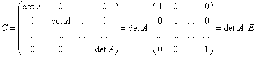

Теорема о существовании и единственности обратной матрицы.
Если матрица  не вырождена, то
существует, и притом единственная, обратная матрица
не вырождена, то
существует, и притом единственная, обратная матрица
 Вычисление
матрицы обратной к данной
,
равная
Вычисление
матрицы обратной к данной
,
равная  ,
где – присоединенная матрица (матрица, составленная
из алгебраических дополнений элементов исходной матрицы).
,
где – присоединенная матрица (матрица, составленная
из алгебраических дополнений элементов исходной матрицы).
не вырождена, то
существует, и притом единственная, обратная матрица
Вычисление
матрицы обратной к данной
,
равная ,
где – присоединенная матрица (матрица, составленная
из алгебраических дополнений элементов исходной матрицы).Доказательство:
Пусть дана квадратная матрица порядка  :
:
:.
1˚. Доказательство существования (необходимость).
Пусть существует . По определению . По свойству 15˚ операции
умножения матриц
. По определению . По свойству 15˚ операции
умножения матриц , ,
то есть матрица не
вырождена.
не
вырождена.2˚. Доказательство существования (достаточность).
Пусть матрица не вырождена. Найдем вид
элементов , для чего вычислим произведение
не вырождена. Найдем вид
элементов , для чего вычислим произведение,
по теореме о разложении определителя по строке
(столбцу), откуда
,
т.е.
.
Так как
,
и
.Доказательство единственности (от противного)
Предположим, что кроме матрицы ,
для которой , существует матрица  , для которой также , причем .
Вычтем из одного равенства другое:
, для которой также , причем .
Вычтем из одного равенства другое:
,
для которой , существует матрица , для которой также , причем .
Вычтем из одного равенства другое:, .
Умножив последнее равенство на справа,
получим:
справа,
получим: .
Так как , , , , что противоречит . Предположение неверно, обратная
матрица единственна.
1˚.
Двойное
обращение матрицы
.
2˚.
Вынесение
числового сомножителя за знак обратной матрицы
.
3˚.
Обратная
матрица от произведения матриц
.
4˚.
Транспонирование
обратной матрицы
.